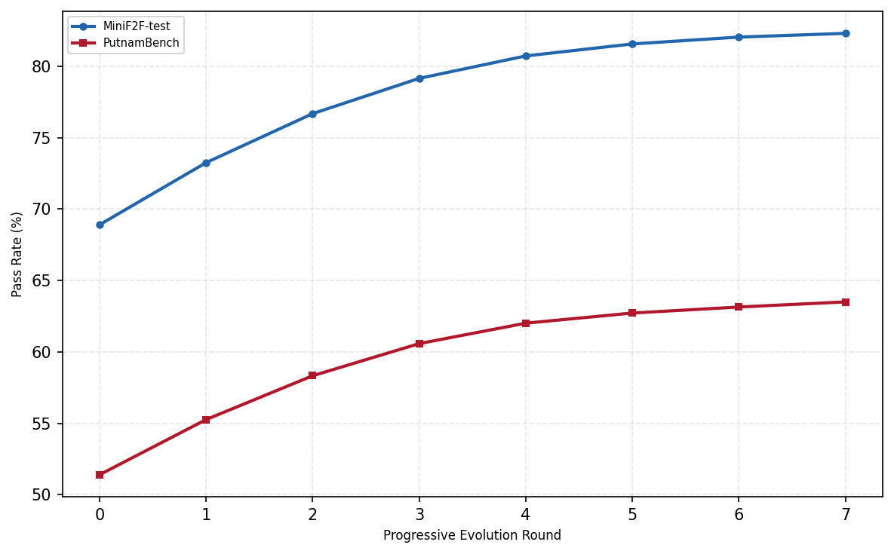

Evolves textual skills for LLM-based Lean provers using Lean verifier feedback, evaluated on Lean benchmarks including MiniF2F, PutnamBench, IMO 2025, and USAMO 2026.
Abstract
Skill evolution offers a promising way to improve large language model agents without updating their parameters, but its use in formal theorem proving remains underexplored. Existing methods mainly target natural-language reasoning, improving skills by analyzing successful and failed trajectories and incrementally revising solving strategies. Although the Lean verifier provides reliable execution feedback, when all sampled trajectories fail, existing skill evolution methods lack successful trajectories from which to infer effective update directions. Furthermore, these methods also focus mainly on the root instruction file, thus underexploring the evolution of reference knowledge including mathematical concepts and proving techniques. To address these limitations, we propose a mutation-enhanced skill self-evolution framework for building skill-augmented Lean provers. The framework jointly evolves a high-level solving policy and its reference knowledge through progressive and mutation-based updates. Progressive evolution derives local improvements from successful and failed trajectories, while mutation is triggered when no complete proof can be generated, sampling mathematical concepts to produce and select new skill candidates under verifier feedback. We evaluate our method on MiniF2F, PutnamBench, the 2025 International Mathematical Olympiad (IMO 2025), and the 2026 USA Mathematical Olympiad (USAMO 2026). Under the same backbone model, trajectorysampling budget, and test-time compute, our method achieves proof success rates of 100.0%, 90.6%, 4/6, and 4/6, respectively, with GPT-5.5, outperforming the baseline methods. Further analysis shows that concept-guided mutation outperforms random-text-guided mutation by 6.9 and 8.2 percentage points on MiniF2F and PutnamBench, respectively, while solving one additional problem on both IMO 2025 and USAMO 2026.
Problem
Skill evolution improves LLM agents without parameter updates, but existing methods need successful trajectories and stall when every sampled proof attempt fails. They also mostly revise the root instruction file and neglect reference knowledge such as mathematical concepts and proving techniques.
Approach
SkillEvoLean jointly evolves a high-level solving policy (SKILL.md) and its reference knowledge using LLM-based operators. Progressive evolution compares successful and failed trajectories to locate skill components and rewrite them. When no complete proof is found, mutation samples new mathematical concepts from a concept pool to perturb the skill. The Lean verifier evaluates candidate skills, and effective updates are kept.
Results
With GPT-5.5, the method reaches 100.0% on MiniF2F, 90.6% on PutnamBench, and 4/6 on both IMO 2025 and USAMO 2026, outperforming baselines under the same backbone model and budgets. Concept-guided mutation beats random-text-guided mutation by 6.9 points on MiniF2F and 8.2 points on PutnamBench.

Figure 3: Progressive evolution converges without mutation. Without mutation-based exploration, progressive updates gradually saturate.